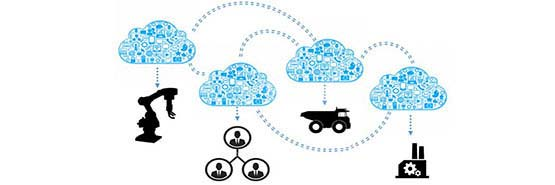

随着工业4.0、IT/OT融合，以及智能制造、《中国制造2025》规划的提出，传统制造业正面临着“物联网”与“智”造转型的巨大挑战。而工业IoT以其转变生产运营的巨大潜质，已经被广泛认为是让制造生产变得灵活，更具成本效益，更快速响应市场需求的最具潜力的方式。
据ARC最新调研数据显示，到2019年，工业IoT的市场总容量(TAM)将攀升至超过2800亿美元，而这一数字仅代表了应用于有可能被纳入工业IoT应用的制造生产中的互联设备的价值。
一、工业IoT带来更多价值
全球制造业正在经历新一轮的工业革命，很多新兴技术，例如信息技术、绿色制造、新材料和3D打印等正在催生出新的制造业门类和领域，而互联网、物联网、云计算和大数据等信息技术与制造业的深度融合正在帮助制造业形成新的业态和发展模式。
在制造业新业态下，制造商和工业经营者越来越迫切地希望实现在各工厂内、各工厂之间安全、无缝地共享信息并延伸至外部的合作伙伴、供应商和客户，从而，有效的改善获取的信息，以及信息共享方式，提高决策水平、揭示过程中效率低下的因素、促进开展最适合的合作并能挖掘新的竞争机遇。这一迫切需求成为了工业IoT快速发展背后的主要驱动力。
实践证明，工业IoT通过 IT/OT有效的融合给生产带来了更多的灵活性；通过互联设备对传感器数据实现了远程监控，从而有效减少了停机时间，达到了预测性维护和跟踪服务；同时，利用云计算和大数据技术，不断的促进了企业业务的完善。
二、设备互联管理是关键
在工业IoT的实践过程中，借助互联网技术的发展，设备互联的瓶颈被逐渐打破，而设备互联管理正在成为整个工业IoT体系架构中的核心关键点，也是真正实现工业IoT的重要落脚点。
如果物联网被看作是一个多层架构的系统，在整个系统中，希望实现远程设备、传感器、资产和其他实地信息随时任意取用，则设备互联管理就是实现设备和数据跨层级使用的粘合剂，同时，也是实现设备的增值，获得差异化竞争优势的助推剂。
在欧美，设备互联管理平台已经在汽车、工业机械和医疗保健等行业有着较广泛的应用。在设备互联管理平台的支持下，工业IoT可实现从简单的开环监测到设备管理、报警等闭环全监测，可实现本地问题的远程解决和服务，同时，还可获取设备、用户的数据流，可以订阅设备运行参数，为制造商和用户带来巨大的高附加值。
设备互联管理平台被看重的不仅是其巨大的高附加值，更重要的是其是实现制造业系统与更高层次物联网或者智能设备链接、互访的重要手段与屏障。大数据、云计算等新技术应用与数据分析和处理都可以通过设备互联管理平台更加安全、高效的实现。

三、硕果累累
以设备互联管理平台为依托的工业IoT，已经在全球有了广泛的应用。据调研显示，目前，设备互联管理平台的市场百分之八十集中在北美国和欧洲地区，而亚洲主要集中在OEM市场。
汽车行业是设备互联管理平台的近年来增长最迅猛的市场之一。设备互联管理平台迎合了汽车供应商希望拥有独立的车辆远程信息处理能力的想法。在欧洲为了应对汽车“召回”安全系统的要求，已经在许多车辆中安装了事故呼叫应答设备，在设备互联管理平台支持下，与BYOD、平板电脑、手机等相结合，轻松实现了汽车的远程访问与安全管理。
在日本，大量的机械设备制造商已经开始使用了设备互联管理平台为基础解决方案。
在可再生能源领域，欧美许多厂商已经广泛利用设备互联管理平台来实现能源供应商对风力涡轮机、太阳能电池板、或者其他难以访问的设备进行远程监控、诊断和解决问题。同时，设备互联管理平台也帮助可再生能源领域实现了配置数据和报警数据流的跨界上传，使得运营商能更快做出最优的决策。
在运输、物流领域，设备互联管理平台的远程监控功能，使得车辆全程监控成为了可能。
四、大势所趋
使用了设备互联管理平台的制造商，设备互联管理平台最大限度地改善了他们的业务；通过远程连接的操作服务，改善了用户体验和产品性能，也为他们带来了全新的收入机会；即使是在成熟的市场，也可轻松实现差异化的竞争优势。显著的效益，迅速吸引竞争对手形成跟风热，据预测未来五年将迎来不低于两位数的快速增长。
传统的M2M厂商Digi、Ericsson、Sierra Wireless通过设备互联管理平台带来了更多的硬件产品销量，而 Axeda和ILS等新兴的设备互联管理平台厂商，则不卖任何硬件，仅以软件平台使客户可以通过低成本但更安全的方式将产品连接到云端，利用远程连接和数据提供一流的服务，从而获得新的商业洞察力，交付创新应用，而成为该领域的后起之秀。
随着工业IoT的不断发展，设备互联管理平台正从汽车、工业机械和医疗保健等行业向能源，运输、物流，水、环保、石油和天然气等领域广泛拓展。